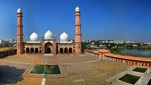
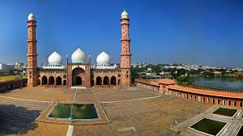

Indore is a city in the state of Madhya Pradesh in India. It is the largest city in Madhya Pradesh.[1] It is 190 km away from Bhopal, which is the capital city of Madhya Pradesh. The lifestyle of people of Indore is similar to Mumbai and also Indore is a rich city like Mumbai. So, Indore is also called "Mini Mumbai" (small Mumbai).[2]
Indore image of indore
image of indore

Bhopal is the capital of Madhya Pradesh, India, and the second largest city of the state, after Indore. Bhopal is also called the City of Lakes.[1] It is the headquarters of Bhopal District. It is in the central part of India. The city is believed to have first been called Bhojpal, named after the King of Bhoj. According to this theory, it was later changed to Bhopal. Bhopal has an average elevation of 499 metres (1637 ft).
 

The area in which Gwalior is situated was the core of Gwalior princely state. That state was once the domain of the Sindhia family, a Maratha dynasty that controlled much of northwestern India during the second half of the 18th century. The foundations of the Gwalior state were laid by Ranoji Sindhia about 1745, and the state reached its greatest extent under Sindhia Mahadaji (reigned 1761–94). Mahadaji was the ruler of a vast territory that included parts of central India and Hindustan proper (northern India), while his officers exacted tribute from the principal Rajput rulers, including those of Jaipur and Jodhpur.